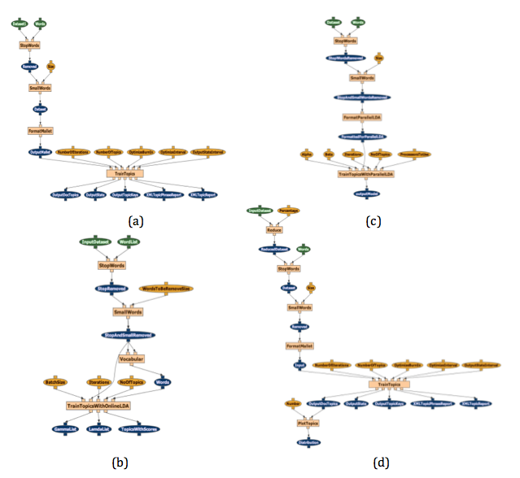
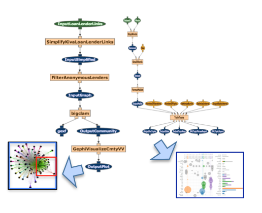

|
|
| A Scalable, Open Source Platform for Data Processing, Archiving and Dissemination | |
Description
Project Goals
End users have a lot of data, but do not have the expertise needed to analyze it. The goal of this project is to empower end users to analyze big data by demonstrating that: 1) data analytics experts can use open source software to quickly assemble workflows, 2) end users can easily run these expert-grade workflows and get useful views on their data.Approach
Our approach is to use workflows to bring end users big data analysis capabilities. We combine semantic workflow capabilities of the WINGS workflow system with scalable data systems and workflow execution infrastructure available in the Apache OODT framework. As a result:- End users can draw from a library of workflows that were previously developed by experts and that capture complex multi-step methods for data analytics.
- End users are assisted to reuse those workflows through the semantic workflow reasoning capabilities of WINGS
- End users can easily process big data through scalable workflow execution and data management provided by the Apache OODT system
Capturing Expertise in Workflows
These are alternative expert-created workflows for modeling salient topics in a collection of documents: They all use the popular LDA (Latent Dirichlet Allocation) algorithm to detect topics. Each of these workflows uses a strategy that works better with large datasets for different reasons: a) efficient LDA through hyperparameter optimization, b) online LDA for incremental processing of streaming data, c) a parallel LDA implementation, and d) sampling to reduce the size of the dataset before running LDA. Creating a workflow does not require a lot of effort. Big data experts can directly reuse the codes that they have. For these topic modeling workflows, we took implementations of these algorithms that were available open source, and used them as components of the workflows. These included Mallet and OnlineLDA
Using Workflows for Big Data Analytics
End users can easily use workflows like these to analyze their own data. Learning to use workflows does not require a lot of effort (e.g., a couple of hours for non-programmers that want to reuse workflows that are already in the system). We used these workflows to analyze data from the Kiva microfinancing site, which contains detailed information about loans and lenders. Below are two examples of analyses done with workflows on this data, the one on the right for detecting popular uses of loans and the one on the left for detecting communities of lenders: The workflow on the right is one of the workflows shown above for topic modeling. The workflow on the left uses the bigclam algorithm of the SNAP package and a visualization done with Gephi (both open source). VARUN PLS ADD LINKS TO THESE